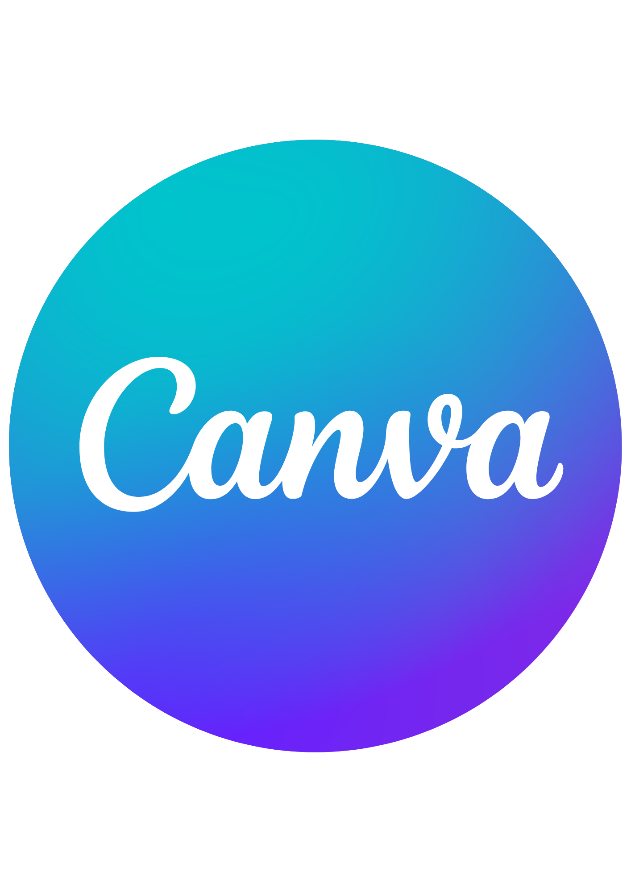

Producto final: Informe medioambiental Jedi
El producto final de esta Situación de Aprendizaje consiste en la elaboración y exposición de un informe medioambiental sobre una provincia de Andalucía.
El alumnado trabajará en pequeños grupos de 4 o 5 miembros, investigando aspectos como:
Características del entorno natural
Problemas medioambientales
Propuestas de mejora
Cada grupo elaborará un informe estructurado que será expuesto oralmente al resto de la clase.
Como elemento motivador, el alumnado recibirá un diploma que certifica su conversión en “Guardianes de la Galaxia Verde”, reforzando su implicación y compromiso con el aprendizaje.
El producto final será evaluado mediante una rúbrica, que permitirá valorar tanto el proceso de elaboración como la calidad del resultado final.
Este producto final favorece el desarrollo de las competencias clave, especialmente la competencia en comunicación lingüística, la competencia digital y la competencia social y cívica, al implicar la investigación, la elaboración de contenidos y su exposición oral.
Además, este producto final permite la transferencia de los aprendizajes a situaciones reales, fomentando la reflexión sobre el cuidado del medioambiente y la adopción de hábitos responsables.
Herramienta digital para el producto final
Para la elaboración del producto final de esta Situación de Aprendizaje se ha seleccionado la herramienta digital Canva, debido a su facilidad de uso y su potencial para crear contenidos visuales atractivos.
Esta herramienta resulta especialmente adecuada para el alumnado de Educación Primaria, ya que ofrece un entorno intuitivo con plantillas, imágenes y elementos gráficos que facilitan la organización de la información.
A través de Canva, el alumnado podrá diseñar su producto final (informe, cartel o infografía) de forma guiada, desarrollando su creatividad y mejorando su competencia digital.
Además, permite presentar los contenidos trabajados de manera visual, favoreciendo la comprensión, la motivación y la exposición oral del producto final.

El alumnado utilizará Canva para diseñar su informe medioambiental en formato infografía, integrando texto, imágenes y propuestas de mejora.
Esta herramienta contribuye al desarrollo de la competencia digital del alumnado, permitiéndole crear contenidos propios de forma autónoma y responsable.
Asimismo, se promueve un uso seguro, responsable y creativo de las herramientas digitales.